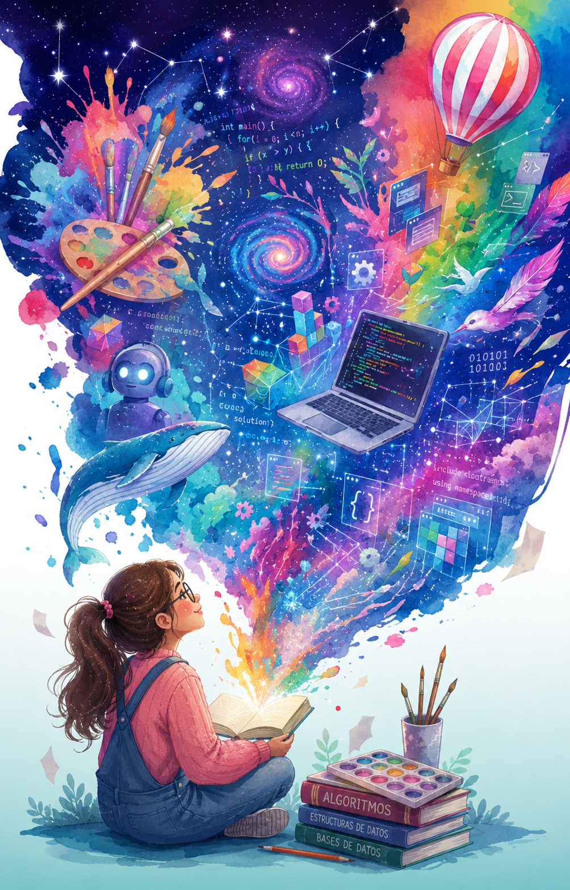

Este sitio web presenta información sobre el arte digital, su impacto en la sociedad
y la evolución del arte tradicional hacia las nuevas tecnologías.
Es una invitación a despertar creatividad, descubrirnos y valorar el arte en todas sus formas.
En los años 70 surgieron los primeros trabajos de arte tecnológico, combinando arte e ingeniería y conectando artistas con tecnología.
La UNESCO publicó un artículo sobre cómo la inteligencia artificial está transformando el mundo del arte.
Leer noticia completa